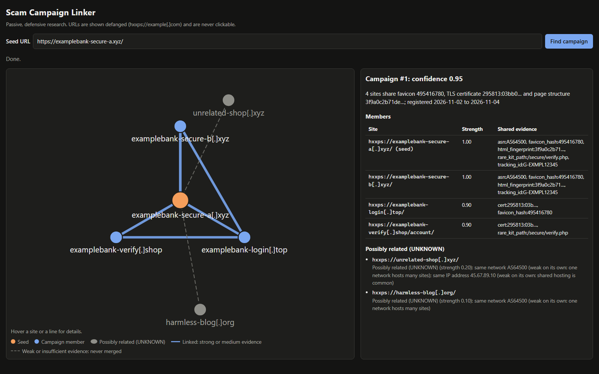

01 / 05
Scam Campaign Linker
A passive, defensive API that collects 9 passive signals per suspicious site and groups sites sharing infrastructure into campaigns, with every score explained.
Safe fetcher with no JavaScript, SSRF checks and size limits. 119 pytest tests in CI with ruff and mypy.
View code